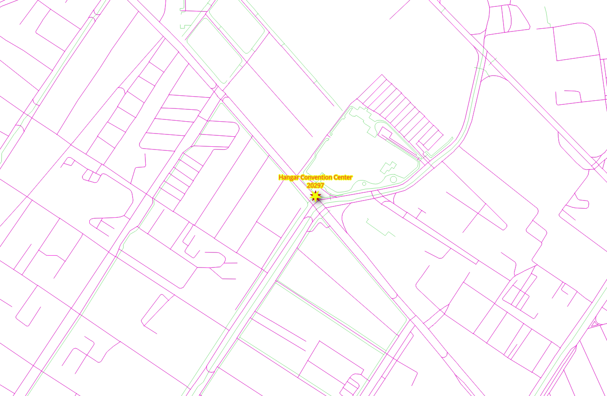

4. Graph views¶

Different application require different graphs. This chapter covers how to discard disconnected segments and different approaches to create graphs.
4.1. The graph requirements¶
In this chapter there are three graph requirements. It consists on three graphs
based on a fully connected graph derived from ways: two for different types
of vehicles and one for pedestrian, the source and the target in all of them are
based on the source_osm and target_osm.
The description of the graphs:
Particular vehicle:
Circulate on the whole Belém area.
Do not use steps, footway, path, cycleway.
Speed is the default speed from OSM information.
Taxi vehicle:
Circulate on a smaller area:
Bounding box:
(-48.52,-1.46,-48.45,-1.41)Do not use steps, footway, path, cycleway.
Speed is 10% slower than that of the particular vehicles.
Pedestrians:
Walk on the whole Belém area.
Can not walk on exclusive vehicle ways
motorways and on primary segments.
The speed is
2 mts/sec.
4.2. pgr_extractVertices¶
pgr_extractVertices compute the connected components of an undirected
graph using a Depth First Search approach. A connected component of an
undirected graph is a set of vertices that are all reachable from each other.
Signature summary
pgr_extractVertices(Edges SQL, [dryrun])
RETURNS SETOF (id, in_edges, out_edges, x, y, geom)
OR EMTPY SET
Description of the function can be found in pgr_extractVertices
4.2.1. Exercise 1: Create a vertices table¶
Problem
Create the vertices table corresponding to the edges in ways.
Solution
A graph consists of a set of vertices and a set of edges.
In this case, the
waystable is a set of edges.In order to make use of all the graph functions from pgRouting, it is required have the set of vertices defined.
From the requirements, the graph is going to be based on OSM identifiers.
SELECT * INTO ways_vertices
FROM pgr_extractVertices(
'SELECT gid AS id, source_osm AS source, target_osm AS target
FROM ways ORDER BY id');
SELECT 24229
Reviewing the description of the vertices table
\dS+ ways_vertices
Table "public.ways_vertices"
Column | Type | Collation | Nullable | Default | Storage | Compression | Stats target | Description
-----------+------------------+-----------+----------+---------+----------+-------------+--------------+-------------
id | bigint | | | | plain | | |
in_edges | bigint[] | | | | extended | | |
out_edges | bigint[] | | | | extended | | |
x | double precision | | | | plain | | |
y | double precision | | | | plain | | |
geom | geometry | | | | main | | |
Access method: heap
Inspecting the information on the vertices table
SELECT * FROM ways_vertices Limit 10;
id | in_edges | out_edges | x | y | geom
------------+---------------+--------------+---+---+------
491423851 | {1024,1025} | {1026,1032} | | |
7495793356 | {21326} | {1084,21328} | | |
492118490 | {2743} | {600,20210} | | |
3684839574 | {12850,12851} | {2} | | |
2614178881 | {10612} | {563,10620} | | |
4057861890 | {14887,14888} | {264,16279} | | |
606964623 | {7987} | {422,7988} | | |
491465232 | {1328,1329} | {470,13502} | | |
491423965 | {1065} | {966,21336} | | |
6950940968 | {20481} | {769,18904} | | |
(10 rows)
4.2.2. Exercise 2: Fill up other columns in the vertices table¶
Problem
Fill up geometry information on the vertices table.
Solution
Count the number of rows that need to be filled up.
SELECT count(*) FROM ways_vertices WHERE geom IS NULL;
count
-------
24229
(1 row)
Update the
geomcolumns based on thesource_osmcolumn fromwaystable.Use the start point of the geometry.
UPDATE ways_vertices SET geom = ST_startPoint(the_geom) FROM ways WHERE source_osm = id;
UPDATE 21275
Not expecting to be done due to the fact that some vertices are only dead ends.
SELECT count(*) FROM ways_vertices WHERE geom IS NULL;
count
-------
2954
(1 row)
Update the
geomcolumns based on thetarget_osmcolumn fromwaystable.Use the end point of the geometry.
UPDATE ways_vertices SET geom = ST_endPoint(the_geom) FROM ways WHERE geom IS NULL AND target_osm = id;
UPDATE 2954
Expecting to be done, that is the geometry column should not have a NULL
value.
SELECT count(*) FROM ways_vertices WHERE geom IS NULL;
count
-------
0
(1 row)
Update the x and y columns based on the geom column.
UPDATE ways_vertices set (x,y) = (ST_X(geom), ST_Y(geom));
UPDATE 24229
4.3. pgr_connectedComponents¶
pgr_connectedComponents compute the connected components of an undirected
graph using a Depth First Search approach. A connected component of an
undirected graph is a set of vertices that are all reachable from each other.
Signature summary
pgr_connectedComponents(edges_sql)
RETURNS SET OF (seq, component, node)
OR EMPTY SET
Description of the function can be found in pgr_connectedComponents
4.3.1. Exercise 3: Set components on edges and vertices tables¶
Problem
Get the information about the graph components.
Solution
Create additional columns on the edges and vertices tables.
ALTER TABLE ways ADD COLUMN component BIGINT;
ALTER TABLE ways_vertices ADD COLUMN component BIGINT;
ALTER TABLE
ALTER TABLE
Use the
pgr_connectedComponentsto fill up the vertices table.Use the results to store the component numbers on the vertices table. (line 1)
Use the OSM identifiers of the vertices. (lines 4-5)
UPDATE ways_vertices SET component = c.component
FROM (SELECT * FROM pgr_connectedComponents(
'SELECT gid as id,
source_osm AS source,
target_osm AS target,
cost, reverse_cost FROM ways'
)) AS c
WHERE id = node;
UPDATE 24229
Update the edges table with based on the component number of the vertex
UPDATE ways SET component = v.component
FROM (SELECT id, component FROM ways_vertices) AS v
WHERE source_osm = v.id;
UPDATE 32586
4.3.2. Exercise 4: Inspect the components¶
Problem
Answer the following questions:
How many components are in the vertices table?
How many components are in the edges table?
List the 10 components with more edges.
Get the component with the maximum number of edges.
Solution
How many components are in the vertices table?
Count the distinct components.
SELECT count(DISTINCT component) FROM ways_vertices;
count
-------
108
(1 row)
How many components are in the edges table?
Count the distinct components.
SELECT count(DISTINCT component) FROM ways;
count
-------
108
(1 row)
List the 10 components with more edges.
Count number of rows grouped by component. (line 1)
Inverse order to display the top 10. (line 2)
SELECT component, count(*) FROM ways GROUP BY component
ORDER BY count DESC LIMIT 10;
component | count
-------------+-------
247780039 | 32164
5857529375 | 117
11351599106 | 22
4321917778 | 19
11177916097 | 17
6117200807 | 15
3976699256 | 14
11776230037 | 13
11177916268 | 10
11352002684 | 10
(10 rows)
Get the component with the maximum number of edges.
Use the query from last question to get the maximum count
Get the component that matches the maximum value.
WITH
all_components AS (SELECT component, count(*) FROM ways GROUP BY component),
max_component AS (SELECT max(count) from all_components)
SELECT component FROM all_components WHERE count = (SELECT max FROM max_component);
component
-----------
247780039
(1 row)
4.4. Preparing the graphs¶
4.4.1. Exercise 5: Creating a view for routing¶
{kind=link}
Problem
Create a view with minimal amount of information for processing the particular vehicles.
Use the OSM identifiers on the vertices.
Routing cost and reverse_cost in terms of seconds for routing calculations.
Exclude steps, footway, path, cycleway segments.
Data needed in the view for further processing.
name The name of the segment.
length_m The length in meters rename to
length.the_geom The geometry rename to
geom.
Verify the number of edges was reduced.
Solution
Creating the view:
If you need to reconstruct the view, first drop it using the command on line 1.
Get the component with maximum number of edges (lines 6-10)
The source and target requirements for the function are to be with OSM identifiers. (line 14)
The
costandreverse_costare in terms of seconds. (line 15)The additional parameters
length_mandthe_geomare renamed,nameis also included. (line 16)JOINwith the configuration:Exclude steps, footway, path, cycleway. (line 18)
-- DROP VIEW vehicle_net CASCADE;
CREATE VIEW vehicle_net AS
WITH
all_components AS (SELECT component, count(*) FROM ways GROUP BY component), -- line 6
max_component AS (SELECT max(count) from all_components),
the_component AS (
SELECT component FROM all_components
WHERE count = (SELECT max FROM max_component))
SELECT
gid AS id,
source_osm AS source, target_osm AS target, -- line 14
cost_s AS cost, reverse_cost_s AS reverse_cost,
name, length_m AS length, the_geom AS geom
FROM ways JOIN the_component USING (component) JOIN configuration USING (tag_id)
WHERE tag_value NOT IN ('steps','footway','path','cycleway'); -- line 18
CREATE VIEW
Verification:
Count the rows on the original ways and on vehicle_net.
SELECT count(*) FROM ways;
SELECT count(*) FROM vehicle_net;
count
-------
32586
(1 row)
count
-------
27632
(1 row)
Get the description of the view
\dS+ vehicle_net
View "public.vehicle_net"
Column | Type | Collation | Nullable | Default | Storage | Description
--------------+---------------------------+-----------+----------+---------+----------+-------------
id | bigint | | | | plain |
source | bigint | | | | plain |
target | bigint | | | | plain |
cost | double precision | | | | plain |
reverse_cost | double precision | | | | plain |
name | text | | | | extended |
length | double precision | | | | plain |
geom | geometry(LineString,4326) | | | | main |
View definition:
WITH all_components AS (
SELECT ways_1.component,
count(*) AS count
FROM ways ways_1
GROUP BY ways_1.component
), max_component AS (
SELECT max(all_components.count) AS max
FROM all_components
), the_component AS (
SELECT all_components.component
FROM all_components
WHERE all_components.count = (( SELECT max_component.max
FROM max_component))
)
SELECT ways.gid AS id,
ways.source_osm AS source,
ways.target_osm AS target,
ways.cost_s AS cost,
ways.reverse_cost_s AS reverse_cost,
ways.name,
ways.length_m AS length,
ways.the_geom AS geom
FROM ways
JOIN the_component USING (component)
JOIN configuration USING (tag_id)
WHERE configuration.tag_value <> ALL (ARRAY['steps'::text, 'footway'::text, 'path'::text, 'cycleway'::text]);
4.4.2. Exercise 6: Limiting the road network within an area¶

Problem
Create a view
taxi_netfor the taxi:The taxi can only circulate inside this Bounding Box:
(-48.52,-1.46,-48.45,-1.41)The taxi speed is 10% slower than the particular vehicle.
Verify the reduced number of road segments.
Solution
Creating the view:
Adjust the taxi’s
costandreverse_costto be 10% slower than of the particular vehicle. (line 7)The graph for the taxi is a subset of the
vehicle_netgraph. (line 9)Can only circulate inside the bounding box:
(-48.52,-1.46,-48.45,-1.41). (line 10)
-- DROP VIEW taxi_net;
CREATE VIEW taxi_net AS
SELECT
id,
source, target,
cost * 1.10 AS cost, reverse_cost * 1.10 AS reverse_cost,
name, length, geom
FROM vehicle_net
WHERE vehicle_net.geom && ST_MakeEnvelope(-48.52,-1.46,-48.45,-1.41);
CREATE VIEW
Count the rows on taxi_net.
SELECT count(*) FROM taxi_net;
count
-------
9180
(1 row)
Get the description.
\dS+ taxi_net
View "public.taxi_net"
Column | Type | Collation | Nullable | Default | Storage | Description
--------------+---------------------------+-----------+----------+---------+----------+-------------
id | bigint | | | | plain |
source | bigint | | | | plain |
target | bigint | | | | plain |
cost | double precision | | | | plain |
reverse_cost | double precision | | | | plain |
name | text | | | | extended |
length | double precision | | | | plain |
geom | geometry(LineString,4326) | | | | main |
View definition:
SELECT id,
source,
target,
cost * 1.10::double precision AS cost,
reverse_cost * 1.10::double precision AS reverse_cost,
name,
length,
geom
FROM vehicle_net
WHERE geom && st_makeenvelope('-48.52'::numeric::double precision, '-1.46'::numeric::double precision, '-48.45'::numeric::double precision, '-1.41'::numeric::double precision);
4.4.3. Exercise 7: Creating a materialized view for routing pedestrians¶

Problem
Create a materialized view with minimal amount of information for processing pedestrians.
Routing cost and reverse_cost will be on seconds for routing calculations.
The speed is
2 mts/sec.
Exclude motorway , primary and secondary segments.
Data needed in the view for further processing.
length_m The length in meters.
the_geom The geometry.
Verify the number of edges was reduced.
Solution
Creating the view:
Similar to Exercise 5: Creating a view for routing:
The
costandreverse_costare in terms of seconds with speed of2 mts/sec. (line 7)Exclude motorway, primary and secondary . (line 11)
-- DROP MATERIALIZED VIEW walk_net CASCADE;
CREATE MATERIALIZED VIEW walk_net AS
WITH
allc AS (SELECT component, count(*) FROM ways GROUP BY component),
maxcount AS (SELECT max(count) from allc),
the_component AS (SELECT component FROM allc WHERE count = (SELECT max FROM maxcount))
SELECT
gid AS id,
source_osm AS source, target_osm AS target,
cost_s AS cost, reverse_cost_s AS reverse_cost,
name, length_m AS length, the_geom AS geom
FROM ways JOIN the_component USING (component) JOIN configuration USING (tag_id)
WHERE tag_value NOT IN ('motorway','primary','secondary');
SELECT 28450
Count the rows on the view walk_net.
SELECT count(*) FROM walk_net;
count
-------
28450
(1 row)
Get the description.
\dS+ walk_net
Materialized view "public.walk_net"
Column | Type | Collation | Nullable | Default | Storage | Compression | Stats target | Description
--------------+---------------------------+-----------+----------+---------+----------+-------------+--------------+-------------
id | bigint | | | | plain | | |
source | bigint | | | | plain | | |
target | bigint | | | | plain | | |
cost | double precision | | | | plain | | |
reverse_cost | double precision | | | | plain | | |
name | text | | | | extended | | |
length | double precision | | | | plain | | |
geom | geometry(LineString,4326) | | | | main | | |
View definition:
WITH allc AS (
SELECT ways_1.component,
count(*) AS count
FROM ways ways_1
GROUP BY ways_1.component
), maxcount AS (
SELECT max(allc.count) AS max
FROM allc
), the_component AS (
SELECT allc.component
FROM allc
WHERE allc.count = (( SELECT maxcount.max
FROM maxcount))
)
SELECT ways.gid AS id,
ways.source_osm AS source,
ways.target_osm AS target,
ways.cost_s AS cost,
ways.reverse_cost_s AS reverse_cost,
ways.name,
ways.length_m AS length,
ways.the_geom AS geom
FROM ways
JOIN the_component USING (component)
JOIN configuration USING (tag_id)
WHERE configuration.tag_value <> ALL (ARRAY['motorway'::text, 'primary'::text, 'secondary'::text]);
Access method: heap
4.4.4. Exercise 8: Testing the views for routing¶

Problem
Test the created views
In particular:
From the Estação das Docas to the “Hangar Convention Center using the OSM identifier
the views to be tested are:
vehicle_nettaxi_netwalk_net
Only show the following results, as the other columns are to be ignored on the function.
seqedgewith the nameidcostwith the name:seconds
Solution
In general
The departure is Estação das Docas with OSM identifier
5661895682.The destination is Hangar Convention Center with OSM identifier
10982869752.
For vehicle_net:
vehicle_netis used.Selection of the columns with the corresponding names are on line 1.
The view is prepared with the column names that pgRouting use.
There is no need to rename columns. (line 3)
The OSM identifiers of the departure and destination are used. (line 4)
1SELECT start_vid, end_vid, agg_cost AS seconds
2FROM pgr_dijkstraCost(
3 'SELECT * FROM vehicle_net',
4 5661895682, 10982869752);
start_vid | end_vid | seconds
------------+-------------+-------------------
5661895682 | 10982869752 | 465.6834621403192
(1 row)
For taxi_net:
Similar as the previous one but with
taxi_net. (line 3)The results give the same route as with
vehicle_netbutcostis higher.
SELECT start_vid, end_vid, agg_cost AS seconds
FROM pgr_dijkstraCost(
'SELECT * FROM taxi_net',
5661895682, 10982869752);
start_vid | end_vid | seconds
------------+-------------+-------------------
5661895682 | 10982869752 | 512.2518083543514
(1 row)
For walk_net:
Similar as the previous one but with
walk_net. (line 3)The results give a different route than of the vehicles.
SELECT start_vid, end_vid, agg_cost AS seconds FROM pgr_dijkstraCost( 'SELECT * FROM walk_net', 5661895682, 10982869752);
start_vid | end_vid | seconds
-----------+---------+---------
(0 rows)